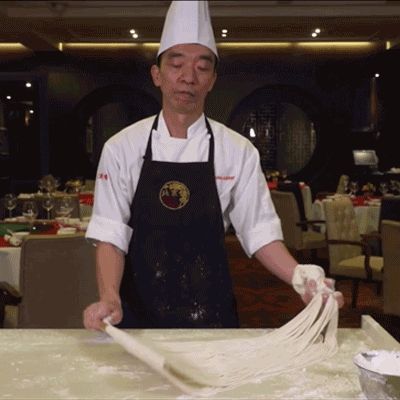
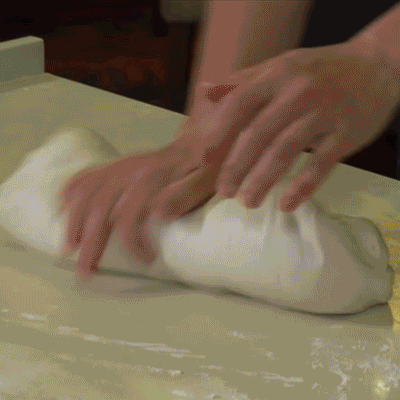
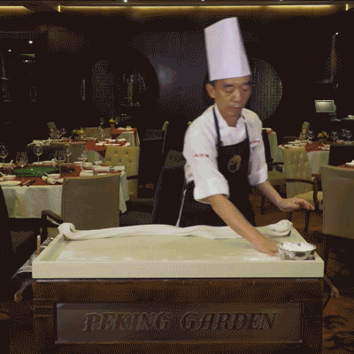
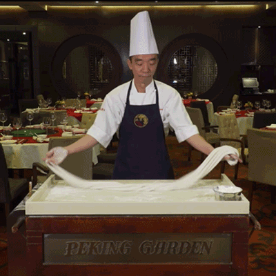

whenever there's no covid75 9th Ave NY, New York 10011
Homemade meals typically bring a sense of nostalgia, and we tend to think of meals that we grew up with. When you are the one cooking, homemade meals bring a great sense of achievement, with your reward being something you created from start to finish. This cooking event specializes in making homemade ramen noodles—from scratch!


This class teaches how to make soft wheat flour noodles known as lamian. It is made by a repetitive process of stretching, twisting and folding the dough, utilizing gravity to do most of the work. How long and thin the noodles are depends on how many times the dough is put through this process. Also included in this class is guidance on how to combine various vegetables, meats and sauces for the optimal ramen experience.
Ramen was traditionally a Chinese dish that migrated to Japan during the 19th century. Traditionally referred to as "shina soba" which roughly translates to "noodle dish," it was made on food carts and sold to the poor and working classes as a cheap meal. It was only until the 1950s that the name "ramen" was adopted. After several recreations and growing popularity, its status shifted to a popular gourmet meal that was a go-to destinations for visitors. While still broad and without complete certainty, it can be said that ramen was initally a Chinese meal that became refined and popularized in Japan.